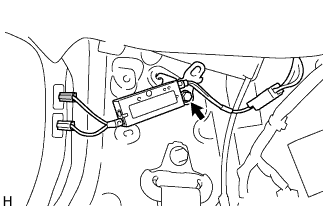

Amplifier Antenna ASSY removal |
| 1. Front doorskuff plate RH is removed |
 |
Pull it up by hand, remove the claws, and remove the front door skirt plate RH.
| 2. The front door opening trim werth strip RH is removed |
| 3. Remove the front seat outa belt Assy RH |
Remove the bolt and remove the front seat Outabelt Assy RH (floor anka).
| 4. Remove seat back ASSY removed (overall rear seat integrated type) |
Make the rear seat Batsuku in an advance.
 |
Remove the clip of the two bolts mounting part.
 |
Turn over the rear seat Batsuku cover, remove the two bolts, and remove the rear seat Batsuku ASSY.
| 5. Remove the rear seat back ASSY RH removed (rear seat split can be split) |
| 6. Remove the rear seat back ASSY LH removed (rear seat split can be split) |
Make the rear seat Batsuku in an advance.
 |
Remove the clip of the two bolts mounting part.
|
Turn the lower part of the rear seat Batsuku cover, remove the two bolts, and remove the rear seat.
| 7. Remove the rear seat cushion assemble (overturned rear seat) |
Press the lock of the front lock in the direction of the arrow in the figure to remove it.
Pass the rear seat belt through the rear seat cushion cover and pad back rubber band.
 |
Remove the hook at the rear hook at the rear seat cushion assembly, and remove the rear seat cushion assessy.
| 8. Remove the rear seat cushion asy (rear seat split can be divided) |
Lock the front side of the rear seat cushion Assy is locked by the rear seat cushion lock striker.
 |
Remove the snap ring from the rear seat back hinge RH.
Rena seat cushion Assy The right bracket is pulled out and remove the rear seat hinge RH.
 |
Remove the bolt and remove the rear -to -hing LH.
Rena seat cushion Assy rear seat hook Assy RH is drawn and the rear seat cushion Assy is removed.
Pass the rear seat belt through the rear seat cushion cover and pad back rubber band.
Remove the rear seat cushion assessy.
| 9. Rear seat 3 point type belt ASSY OUT RH removed |
Remove the bolt and remove the front seat Outabelt Assy RH (floor anka).
| 10. Remove the rear floor carpet |
| 11. Spare Wheel Cover ASSY |
| 12. Remove the backdoor with the strip |
| 13. Remove the backdoor scuff plate |
 |
Remove two clips.
Pull up by hand from the end of the trim cover, remove the clip, and remove the Batsukudo Askatsuh plate.
| 14. Remove the quota trim panel Assy FR RH |
| 15. Deck trim side panel ASSY RH removed |
 |
Remove the clip and claws, and remove the Detsu Rim Side Panel Assing RH.
| 16. Roof side garnish Inn RH is removed |
 |
Pull the garnish with your hand in the inside of the vehicle, remove the clip, and remove the roof side in -nagarnish LH.
| 17. Amplifier antenna ASSY |
|  |
Cut the connector.
Remove one bolt and remove the amplifier antenna ASSY.